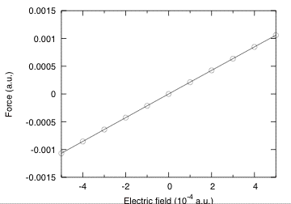
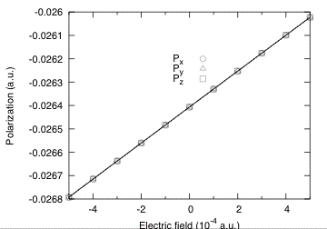
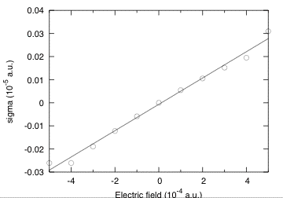

Lesson on polarization and finite electric fields¶
Polarization, and responses to finite electric fields for AlAs.¶
This lesson aims at showing how to get the following physical properties, for an insulator:
- The polarization.
- The Born effective charge (by finite differences of polarization)
- The Born effective charge (by finite differences of forces)
- The dielectric constant
- The proper piezoelectric tensor (clamped and relaxed ions)
The case of the linear responses (Born effective charge, dielectric constant, piezoelectric tensor) is treated independently in other tutorials (lesson Response-Function 1, lesson on Elastic properties), using Density-Functional Perturbation Theory. You will learn here how to get these quantities using the finite difference techniques within ABINIT. To that end, we will describe how to compute the polarization, in the Berry phase formulation, and how to perform finite electric field calculations.
This lesson should take about 1 hour and 30 minutes.
The basic theory for Berry phase computation of the polarization was proposed by R. D. King-Smith and D. Vanderbilt in [Kingsmith1993]. The longer (excellent) paper D. Vanderbilt and R. D. King-Smith ([Vanderbilt1993]) clarifies many aspects of this theory (especially in view of application to AlAs, as in this tutorial). One might benefit also from a reading of the review article [[cite:Resta1994].
In order to gain the theoretical background needed to perform a calculation with a finite electric field, you should consider reading the following papers: [Souza2002], [Nunes2001] and M. Veithen PhD thesis Finally, the extension to the PAW formalism specifically in ABINIT is discussed in [Gonze2009] and [Zwanziger2012].
1 Ground-state properties of AlAs and general parameters¶
Before beginning, you might consider working in a different subdirectory, as for the other lessons. Why not create “Work-ffield” in ~abinit/tests/tutorespfn/Input?
In this tutorial we will assume that the ground-state properties of AlAs have been previously obtained, and that the corresponding convergence studies have been done. We will adopt the following set of generic parameters:
acell 10.53
ixc 3
ecut 2.8 (results with ecut = 5 are also reported
in the discussion)
ecutsm 0.5
dilatmx 1.05
nband 4 (=number of occupied bands)
ngkpt 6 6 6
nshiftk 4
shiftk 0.5 0.5 0.5
0.5 0.0 0.0
0.0 0.5 0.0
0.0 0.0 0.5
pseudopotentials 13al.pspnc
33as.pspnc
In principle, the acell to be used should be the one corresponding to the optimized structure at the ecut, and ngkpt combined with nshiftk and shiftk, chosen for the calculations.
Unfortunately, for the purpose of this tutorial, in order to limit the duration of the runs, we have to work at an unusually low cutoff of 2.8 Ha for which the optimized lattice constant is equal to 7.45*0.707*2 Bohr=10.53 Bohr (instead of the converged value of 10.64 Bohr). For comparison, results with ecut=5 are also reported and, in that case, were obtained at the optimized lattice constant of 10.64 bohr. For those who would like to try later, convergence tests and structural optimizations can be done using the file tests/tutorespfn/Input/tnlo_1.in. Before going further, you might refresh your memory concerning the other variables: ixc, ecutsm, dilatmx.
2 Berry phase calculation of polarization in zero field¶
In this section, you will learn how to perform a Berry phase calculation of the polarization. As a practical problem we will try to compute the Born effective charges from finite difference of the polarization (under finite atomic displacements), for AlAs.
You can now copy the file tests/tutorespfn/Input/tffield_1.in and tests/tutorespfn/Input/tffield_x.files in Work-ffield, and modify the latter as usual (for example, edit it so that the various file names it contains refer to tffield_1 rather than tffield_x).
../tffield_1.in tffield_x.out tffield_xi tffield_xo tffield_x ../../../Psps_for_tests/13al.pspnc ../../../Psps_for_tests/33as.pspnc
# Finite difference calculation of the Born effective charges of AlAs # (M. Veithen, 29.4.2005) # #Definition of the different datasets #************************************ ndtset 3 jdtset 1 2 3 xcart1 0.0000000000E+00 0.0000000000E+00 0.0000000000E+00 2.6325000000E+00 2.6325000000E+00 2.6325000000E+00 xcart2 1.0000000000E-02 0.0000000000E+00 0.0000000000E+00 2.6325000000E+00 2.6325000000E+00 2.6325000000E+00 xcart3 -1.0000000000E-02 0.0000000000E+00 0.0000000000E+00 2.6325000000E+00 2.6325000000E+00 2.6325000000E+00 #Definition of the elementary cell #********************************* acell 3*10.53 rprim 0.0 0.5 0.5 0.5 0.0 0.5 0.5 0.5 0.0 #Definition of the atoms #*********************** nband 4 natom 2 ntypat 2 znucl 13 33 typat 1 2 ixc 3 #Definition of the SCF procedure #******************************* nstep 100 #Definition of the plane wave basis set #************************************** ecut 2.8 ecutsm 0.5 dilatmx 1.05 ngkpt 6 6 6 nshiftk 4 shiftk 0.5 0.5 0.5 0.5 0.0 0.0 0.0 0.5 0.0 0.0 0.0 0.5 toldfe 1.0d-12 # Berry phase calculation of the polarization #******************************************** berryopt -1 rfdir 1 1 1 ## After modifying the following section, one might need to regenerate the pickle database with runtests.py -r #%%<BEGIN TEST_INFO> #%% [setup] #%% executable = abinit #%% [files] #%% files_to_test = #%% tffield_1.out, tolnlines= 1, tolabs= 1.100e-08, tolrel= 3.000e-04 #%% psp_files = 13al.pspnc, 33as.pspnc #%% [paral_info] #%% max_nprocs = 2 #%% [extra_info] #%% authors = M. Veithen #%% keywords = NC, DFPT #%% description = #%% Finite difference calculation of the Born effective charges of AlAs #%%<END TEST_INFO>
Note that two pseudopotentials are mentioned in this “files” file: one for the Aluminum atom, and one for the Arsenic atom. The first to be mentioned, for Al, will define the first type of atom. The second to be mentioned, for As, will define the second type of atom. It might the first time that you encounter this situation (more than one type of atoms) in the tutorials, at variance with the four “basic” lessons.
Because of the use of two types of atoms, have also a look at the following input variables present, in the “input” file:
You can start the calculation. It should take 90 seconds on a PC 3GHz. Then, examine the tffield_1.in file. It is made of three datasets corresponding to the reference optimized structure (tau=0) and to structure with the Al atom displaced from 0.01 bohr right and left (referred to as tau = +0.01 and tau = -0.01). This is typically the amplitude of atomic displacement to be considered in this kind of computations. Notice also that the displacements are given using xcart, that is, explicitly in Cartesian directions, rather than the primitive cell axes (using xred). This makes the correspondence with the polarization output in Cartesian directions much simpler to understand.
There are two implementations of the Berry phase within ABINIT. One corresponds to positive values of berryopt and was implemented by Na Sai. The other one corresponds to negative values of berryopt was implemented by Marek Veithen. Both are suitable to compute the polarization. Here we will focus on the implementation of Marek Veithen for two reasons. First, the results are directly provided in Cartesian coordinates at the end of the run (while the implementation of Na Sai reports them in reduced coordinates). Second the implementation of Marek Veithen is the one to be used for the finite electric field calculation as described in the next Section. Finally, note also that Veithen’s implementation works with kptopt = 1 or 2 while Na Sai implementation is restricted to kptopt = 2, which is less convenient.
The file is the one of a usual self-consistent calculation. On top of the usual variables, for the Berry phase calculation we simply need to define berryopt and rfdir:
berryopt -1
rfdir 1 1 1
Make the run, then open the output file and look for the occurrence “Berry”. The output reports values of the Berry phase for individual k-point strings.
Computing the polarization (Berry phase) for reciprocal vector:
0.16667 0.00000 0.00000 (in reduced coordinates)
-0.01583 0.01583 0.01583 (in cartesian coordinates - atomic units)
Number of strings: 144
Number of k points in string: 6
Summary of the results
Electronic Berry phase 2.025856545E-03
Ionic phase -7.500000000E-01
Total phase -7.479741435E-01
Remapping in [-1,1] -7.479741435E-01
Polarization -1.557862799E-02 (a.u. of charge)/bohr^2
Polarization -8.913274846E-01 C/m^2
The “Remapping in [-1,1]” is there to avoid the quantum of polarization. As discussed in [Djani2012], the indeterminacy of the quantum phase, directly related to the quantum of polarization, can lead to spurious effects (see Fig. 2 of the above-mentioned paper). By remapping on the [-1,1] interval, any indeterminacy is removed. However, removing such a quantum of polarization between two calculations might give the false impression that one is on the same polarization branch in the two calculations, while actually the branch is made different by this remapping. Cross-checking the polarization results by computing the Born effective charge, further multiplied by the displacements between the two geometries is an excellent way to estimate the amplitude of the polarization.
Other subtleties of Berry phases, explained in [Vanderbilt1993] also apply. First, note that neither the electronic Berry phase nor the ionic phase vanish in this highly symmetric case, contrary to intuition. Even though AlAs does not have inversion symmetry, it does have tetrahedral symmetry, which would be enough to make an ordinary vector vanish. But a lattice-valued vector does not have to vanish: the lattice just has to transform into itself under the tetrahedral point group. The ionic phase corresponds actually to a lattice-valued vector (-¾ -¾ -¾). Concerning the electronic phase, it does not exactly vanish, unless the sampling of k points becomes continuous. If you go further in the file you will find the final results in cartesian coordinates. You can collect them for the different values of tau.
tau = 0
Polarization in cartesian coordinates (a.u.):
(the sum of the electronic and ionic Berry phase has been folded into [-1, 1])
Electronic berry phase: 0.730822547E-04 0.730822547E-04 0.730822547E-04
Ionic: -0.270560574E-01 -0.270560574E-01 -0.270560574E-01
Total: -0.269829752E-01 -0.269829752E-01 -0.269829752E-01
Polarization in cartesian coordinates (C/m^2):
(the sum of the electronic and ionic Berry phase has been folded into [-1, 1])
Electronic berry phase: 0.418138377E-02 0.418138377E-02 0.418138377E-02
Ionic: -0.154800587E+01 -0.154800587E+01 -0.154800587E+01
Total: -0.154382449E+01 -0.154382449E+01 -0.154382449E+01
tau = +0.01
Polarization in cartesian coordinates (a.u.):
(the sum of the electronic and ionic Berry phase has been folded into [-1, 1])
Electronic berry phase: 0.410030549E-04 0.730924693E-04 0.730924693E-04
Ionic: -0.269532804E-01 -0.270560574E-01 -0.270560574E-01
Total: -0.269122773E-01 -0.269829650E-01 -0.269829650E-01
Polarization in cartesian coordinates (C/m^2):
(the sum of the electronic and ionic Berry phase has been folded into [-1, 1])
Electronic berry phase: 0.234598001E-02 0.418196820E-02 0.418196820E-02
Ionic: -0.154212551E+01 -0.154800587E+01 -0.154800587E+01
Total: -0.153977953E+01 -0.154382391E+01 -0.154382391E+01
tau = -0.01
Polarization in cartesian coordinates (a.u.):
(the sum of the electronic and ionic Berry phase has been folded into [-1, 1])
Electronic berry phase: 0.105181874E-03 0.730924694E-04 0.730924694E-04
Ionic: -0.271588345E-01 -0.270560574E-01 -0.270560574E-01
Total: -0.270536526E-01 -0.269829650E-01 -0.269829650E-01
Polarization in cartesian coordinates (C/m^2):
(the sum of the electronic and ionic Berry phase has been folded into [-1, 1])
Electronic berry phase: 0.601795583E-02 0.418196820E-02 0.418196820E-02
Ionic: -0.155388624E+01 -0.154800587E+01 -0.154800587E+01
Total: -0.154786828E+01 -0.154382391E+01 -0.154382391E+01
From the previous data, we can extract the Born effective charge of Al. Values to be used are those in a.u., in order to find the charge in electron unit. It corresponds to (the volume of the primitive unit cell must be specified in Bohr too):
Z* = \Omega_0 (P[tau=+0.01] - P[tau=-0.01]) / (2*tau)
= 291.89 (-0.269122773E-01 - -0.270536526E-01) / 0.02
= 2.06
For comparison, the calculation using Density-Functional Perturbation Theory (DFPT) can be done by using the file ~abinit/tests/tutorespfn/Input/tffield_2.in.
# Linear response calculation for AlAs # Perturbation: atomic displacements & strains # Finite difference calculation of the ddk # (M. Veithen, 28.4.2005) #Definition of the primitive cell #******************************** acell 3*10.53 rprim 0.0 0.5 0.5 0.5 0.0 0.5 0.5 0.5 0.0 #Definition atomic positions and types #************************************* natom 2 ntypat 2 znucl 13 33 typat 1 2 xred 0 0 0 0.25 0.25 0.25 ixc 3 #Parameters of the SCF cycles #**************************** nstep 100 #Pland wave basis and k-point grid #********************************* ecut 2.8 ecutsm 0.5 dilatmx 1.05 ngkpt 6 6 6 nshiftk 4 shiftk 0.5 0.5 0.5 0.5 0.0 0.0 0.0 0.5 0.0 0.0 0.0 0.5 ndtset 3 #DATASET1 : scf calculation: GS WF in the BZ #******************************************** prtden1 1 kptopt1 1 toldfe1 1.0d-12 #DATASET2 : non scf calculation: GS WF in the whole BZ #***************************************************** getden2 1 kptopt2 2 iscf2 -2 getwfk2 1 tolwfr2 1.0d-22 nband2 4 berryopt2 -2 rfdir2 1 1 1 #DATASET3 : linear response to atomic displacements and strains #************************************************************** getwfk3 2 getddk3 2 rfdir3 1 1 1 rfstrs3 3 rfphon3 1 rfatpol3 1 2 toldfe3 1.0d-12 nband3 4 kptopt3 2 ## After modifying the following section, one might need to regenerate the pickle database with runtests.py -r #%%<BEGIN TEST_INFO> #%% [setup] #%% executable = abinit #%% test_chain = tffield_2.in, tffield_3.in #%% [files] #%% files_to_test = #%% tffield_2.out, tolnlines= 2, tolabs= 5.000e-07, tolrel= 3.000e-04, fld_options=-medium #%% psp_files = 13al.pspnc, 33as.pspnc #%% [paral_info] #%% max_nprocs = 2 #%% [extra_info] #%% authors = M. Veithen #%% keywords = NC, DFPT #%% description = #%% Linear response calculation for AlAs #%% Perturbation: atomic displacements & strains #%% Finite difference calculation of the ddk #%%<END TEST_INFO>
Actually, the file tffield_2.in not only leads to the computation of the Born effective charges, but also the computation of the piezoelectric constants (see later).
You can review how to use DFPT thanks to the lesson Response-function 1 and lesson Response-function 2 tutorials. For now, go ahead and run the input file, and have a look at the output file, to identify the place where the Born effective charge is written (search for the phrase “Effective charges” in the output file). The value we get from DFPT is 2.06, in agreement with the above-mentioned value of 2.06. This level of agreement is fortuitous for unconverged calculations, though both methods (finite-difference and DFPT) will tend to the same value for better converged calculations.
The DDB generated by ~abinit/tests/tutorespfn/Input/tffield_2.in can be fed in anaddb, thanks to the ~abinit/tests/tutorespfn/Input/tffield_3.in input file and the tffield_3.files file.
tffield_3.in tffield_3.out tffield_2o_DS3_DDB tffield_3_band2eps tffield_dummy1 tffield_dummy2 tffield_dummy3
# General informations #********************** rfmeth 1 chneut 2 # Flags #******* elaflag 3 piezoflag 3 instrflag 1 ## After modifying the following section, one might need to regenerate the pickle database with runtests.py -r #%%<BEGIN TEST_INFO> #%% [setup] #%% executable = anaddb #%% test_chain = tffield_2.in, tffield_3.in #%% input_ddb = tffield_2o_DS3_DDB #%% [files] #%% files_to_test = #%% tffield_3.out, tolnlines= 0, tolabs= 0.000e+00, tolrel= 0.000e+00, fld_options = -easy #%% [paral_info] #%% max_nprocs = 4 #%% [extra_info] #%% authors = M. Veithen, P. Ghosez #%% keywords = #%% description = Anaddb input file. #%%<END TEST_INFO>
Note
Note that tffield_3.files is expecting the DDB to be named tffield_2o_DS3_DDB, so either adjust tffield_x.files before running tffield_2.in to match this, or else change the name of the DDB file after generation.
In any case, the DFPT calculation gives for the piezoelectric constants (as well as the elastic constants), as found in tffield_3.out, the following:
Proper piezoelectric constants (clamped ion) (unit:c/m^2)
...
-0.64879283 0.00000000 0.00000000
...
Proper piezoelectric constants (relaxed ion) (unit:c/m^2)
...
0.04575010 0.00000000 0.00000000
.Version 8.0.3 of ANADDB
.(MPI version, prepared for a x86_64_linux_gnu5.3 computer)
.Copyright (C) 1998-2018 ABINIT group .
ANADDB comes with ABSOLUTELY NO WARRANTY.
It is free software, and you are welcome to redistribute it
under certain conditions (GNU General Public License,
see ~abinit/COPYING or http://www.gnu.org/copyleft/gpl.txt).
ABINIT is a project of the Universite Catholique de Louvain,
Corning Inc. and other collaborators, see ~abinit/doc/developers/contributors.txt .
Please read ~abinit/doc/users/acknowledgments.html for suggested
acknowledgments of the ABINIT effort.
For more information, see https://www.abinit.org .
.Starting date : Mon 4 Apr 2016.
- ( at 09h52 )
================================================================================
-outvars_anaddb: echo values of input variables ----------------------
Flags :
elaflag 3
instrflag 1
piezoflag 3
Miscellaneous information :
asr 1
chneut 2
================================================================================
read the DDB information and perform some checks
Real(R)+Recip(G) space primitive vectors, cartesian coordinates (Bohr,Bohr^-1):
R(1)= 0.0000000 5.2650000 5.2650000 G(1)= -0.0949668 0.0949668 0.0949668
R(2)= 5.2650000 0.0000000 5.2650000 G(2)= 0.0949668 -0.0949668 0.0949668
R(3)= 5.2650000 5.2650000 0.0000000 G(3)= 0.0949668 0.0949668 -0.0949668
Unit cell volume ucvol= 2.9189397E+02 bohr^3
Angles (23,13,12)= 6.00000000E+01 6.00000000E+01 6.00000000E+01 degrees
Now the whole DDB is in central memory
================================================================================
Calculation of the internal-strain tensor
Force-response internal strain tensor(Unit:Hartree/bohr)
Atom dir strainxx strainyy strainzz strainyz strainxz strainxy
1 x 0.0000000 0.0000000 0.0000000 0.1759596 0.0000000 0.0000000
1 y 0.0000000 0.0000000 0.0000000 0.0000000 0.1759596 -0.0000000
1 z -0.0000000 -0.0000000 -0.0000000 0.0000000 -0.0000000 0.1759596
2 x -0.0000000 -0.0000000 -0.0000000 -0.1759596 -0.0000000 -0.0000000
2 y -0.0000000 -0.0000000 -0.0000000 -0.0000000 -0.1759596 0.0000000
2 z 0.0000000 0.0000000 0.0000000 -0.0000000 0.0000000 -0.1759596
Displacement-response internal strain tensor (Unit:Bohr)
Atom dir strainxx strainyy strainzz strainyz strainxz strainxy
1 x 0.0000000 0.0000000 0.0000000 0.8586685 0.0000000 0.0000000
1 y 0.0000000 0.0000000 0.0000000 0.0000000 0.8586685 -0.0000000
1 z -0.0000000 -0.0000000 -0.0000000 0.0000000 -0.0000000 0.8586685
2 x -0.0000000 -0.0000000 -0.0000000 -0.8586685 -0.0000000 -0.0000000
2 y -0.0000000 -0.0000000 -0.0000000 -0.0000000 -0.8586685 0.0000000
2 z 0.0000000 0.0000000 0.0000000 -0.0000000 0.0000000 -0.8586685
================================================================================
Calculation of the elastic and compliances tensor (Voigt notation)
Elastic Tensor (clamped ion) (unit:10^2GP):
1.2241902 0.6348587 0.6348587 -0.0000000 -0.0000000 -0.0000000
0.6348587 1.2241902 0.6348587 -0.0000000 -0.0000000 -0.0000000
0.6348587 0.6348587 1.2241902 -0.0000000 -0.0000000 -0.0000000
-0.0000000 -0.0000000 -0.0000000 0.8774857 0.0000000 0.0000000
0.0000000 0.0000000 0.0000000 0.0000000 0.8774857 -0.0000000
0.0000000 0.0000000 0.0000000 0.0000000 -0.0000000 0.8774857
Elastic Tensor (relaxed ion) (unit:10^2GP):
(at fixed electric field boundary condition)
1.2241902 0.6348587 0.6348587 -0.0000000 -0.0000000 -0.0000000
0.6348587 1.2241902 0.6348587 -0.0000000 -0.0000000 -0.0000000
0.6348587 0.6348587 1.2241902 -0.0000000 -0.0000000 -0.0000000
-0.0000000 -0.0000000 -0.0000000 0.5729059 0.0000000 -0.0000000
0.0000000 -0.0000000 -0.0000000 0.0000000 0.5729059 -0.0000000
0.0000000 0.0000000 0.0000000 -0.0000000 -0.0000000 0.5729059
Compliance Tensor (clamped ion) (unit: 10^-2GP^-1):
1.2648844 -0.4319536 -0.4319536 0.0000000 0.0000000 0.0000000
-0.4319536 1.2648844 -0.4319536 -0.0000000 0.0000000 0.0000000
-0.4319536 -0.4319536 1.2648844 -0.0000000 0.0000000 0.0000000
-0.0000000 0.0000000 0.0000000 1.1396197 -0.0000000 -0.0000000
-0.0000000 0.0000000 0.0000000 -0.0000000 1.1396197 0.0000000
-0.0000000 -0.0000000 0.0000000 -0.0000000 0.0000000 1.1396197
Compliance Tensor (relaxed ion) (unit: 10^-2GP^-1):
(at fixed electric field boundary condition)
1.2648844 -0.4319536 -0.4319536 0.0000000 0.0000000 0.0000000
-0.4319536 1.2648844 -0.4319536 -0.0000000 0.0000000 0.0000000
-0.4319536 -0.4319536 1.2648844 -0.0000000 0.0000000 0.0000000
-0.0000000 0.0000000 0.0000000 1.7454872 -0.0000000 0.0000000
-0.0000000 0.0000000 0.0000000 -0.0000000 1.7454872 0.0000000
-0.0000000 -0.0000000 0.0000000 0.0000000 0.0000000 1.7454873
================================================================================
Calculation of the tensor related to piezoelectric effetc
(Elastic indices in Voigt notation)
Proper piezoelectric constants (clamped ion) (unit:c/m^2)
0.00000000 0.00000000 0.00000000
0.00000000 0.00000000 0.00000000
-0.00000000 -0.00000000 0.00000000
-0.64879283 0.00000000 0.00000000
0.00000000 -0.64879282 0.00000000
0.00000000 0.00000000 -0.64879282
ddb_piezo : WARNING -
Acoustic sum rule violation met : the eigenvalues of accoustic mode
are too large at Gamma point
Increase cutoff energy or k-points sampling.
The three eigenvalues are: 1.305542E-06 1.581522E-18 1.305542E-06
Proper piezoelectric constants (relaxed ion) (unit:c/m^2)
0.00000000 0.00000000 -0.00000000
0.00000000 0.00000000 -0.00000000
0.00000000 0.00000000 -0.00000000
0.04575010 0.00000000 0.00000000
0.00000000 0.04575010 -0.00000000
0.00000000 -0.00000000 0.04575011
-
- Proc. 0 individual time (sec): cpu= 0.1 wall= 0.0
================================================================================
+Total cpu time 0.051 and wall time 0.034 sec
anaddb : the run completed succesfully.
Restarting case ffield_2 and ffield_3 with ecut=5 (three minutes on a PC 3 GHz), one gets the following values
Proper piezoelectric constants (clamped ion) (unit:c/m^2)
...
-0.68377667 0.00000000 0.00000000
...
Proper piezoelectric constants (relaxed ion) (unit:c/m^2)
...
0.03384772 0.00000000 0.00000000
The latter value, where the ionic relaxation largely suppresses the electronic piezoelectricity, will be much more difficult to converge than the clamped ion result.
Using the Berry phase approach it is also possible to compute the piezoelectric constant from finite difference of polarization with respect to strains. This can be done considering clamped ions or relaxed ions configurations.
For this purpose, have a look at the files ~abinit/tests/tutorespfn/Input/tffield_4.in (clamped ions) and ~abinit/tests/tutorespfn/Input/tffield_5.in (relaxed ions).
# Finite difference calculation of the clamped-ion # piezoelectric constants of AlAs # (M. Veithen, 3.5.2005) ndtset 3 # strain: eta_4 = 0.00 acell1 3*7.44856 rprim1 0.0000000000E+00 7.0710678119E-01 7.0710678119E-01 7.0710678119E-01 0.0000000000E+00 7.0710678119E-01 7.0710678119E-01 7.0710678119E-01 0.0000000000E+00 # strain: eta_4 = 0.01 acell2 7.4858028 2*7.44856 rprim2 0. 0.70710678118654746 0.70710678118654746 0.70710236181059671 0.00353551180905298 0.70710236181059671 0.70710236181059671 0.70710236181059671 0.00353551180905298 # strain: eta_4 = -0.01 2*7.44856 acell3 7.4113172 2*7.44856 rprim3 0. 0.70710678118654757 0.70710678118654757 0.70710236181059671 -0.00353551180905298 0.70710236181059671 0.70710236181059671 0.70710236181059671 -0.00353551180905298 #Definition of the atoms #*********************** natom 2 ntypat 2 znucl 13 33 typat 1 2 ixc 3 xred 0.00 0.00 0.00 0.25 0.25 0.25 #Definition of the SCF procedure #******************************* nstep 100 #Definition of the plane wave basis set #************************************** ecut 2.8 ecutsm 0.5 dilatmx 1.05 ngkpt 6 6 6 nshiftk 4 shiftk 0.5 0.5 0.5 0.5 0.0 0.0 0.0 0.5 0.0 0.0 0.0 0.5 toldfe 1.0d-12 # Berry phase calculation of the polarization #******************************************** berryopt -1 rfdir 1 1 1 ## After modifying the following section, one might need to regenerate the pickle database with runtests.py -r #%%<BEGIN TEST_INFO> #%% [setup] #%% executable = abinit #%% [files] #%% files_to_test = #%% tffield_4.out, tolnlines= 0, tolabs= 0.000e+00, tolrel= 0.000e+00 #%% psp_files = 13al.pspnc, 33as.pspnc #%% [paral_info] #%% max_nprocs = 2 #%% [extra_info] #%% authors = M. Veithen #%% keywords = NC, DFPT #%% description = #%% Finite difference calculation of the clamped-ion #%% piezoelectric constants of AlAs #%%<END TEST_INFO>
# Finite difference calculation of the clamped-ion # piezoelectric constants of AlAs # (M. Veithen, 3.5.2005) ndtset 3 # strain: eta_4 = 0.00 acell1 3*7.44856 rprim1 0.0000000000E+00 7.0710678119E-01 7.0710678119E-01 7.0710678119E-01 0.0000000000E+00 7.0710678119E-01 7.0710678119E-01 7.0710678119E-01 0.0000000000E+00 # strain: eta_4 = 0.01 acell2 7.4858028 2*7.44856 rprim2 0. 0.70710678118654746 0.70710678118654746 0.70710236181059671 0.00353551180905298 0.70710236181059671 0.70710236181059671 0.70710236181059671 0.00353551180905298 # strain: eta_4 = -0.01 acell3 7.4113172 2*7.44856 rprim3 0. 0.70710678118654757 0.70710678118654757 0.70710236181059671 -0.00353551180905298 0.70710236181059671 0.70710236181059671 0.70710236181059671 -0.00353551180905298 #Definition of the atoms #*********************** natom 2 ntypat 2 znucl 13 33 typat 1 2 ixc 3 xred 0.00 0.00 0.00 0.25 0.25 0.25 #Definition of the SCF procedure #******************************* nstep 8 #Definition of the plane wave basis set #************************************** ecut 2.8 ecutsm 0.5 dilatmx 1.05 ngkpt 6 6 6 nshiftk 4 shiftk 0.5 0.5 0.5 0.5 0.0 0.0 0.0 0.5 0.0 0.0 0.0 0.5 toldfe 5.0d-14 # Relaxation of atomic positions #******************************* optcell 0 ionmov 2 tolmxf 1.0d-5 ntime 13 # Berry phase calculation of the polarization #******************************************** berryopt -1 rfdir 1 1 1 ## After modifying the following section, one might need to regenerate the pickle database with runtests.py -r #%%<BEGIN TEST_INFO> #%% [setup] #%% executable = abinit #%% [files] #%% files_to_test = #%% tffield_5.out, tolnlines= 4, tolabs= 1.100e-08, tolrel= 4.500e-04 #%% psp_files = 13al.pspnc, 33as.pspnc #%% [paral_info] #%% max_nprocs = 2 #%% [extra_info] #%% authors = M. Veithen #%% keywords = NC, DFPT #%% description = #%% Finite difference calculation of the clamped-ion #%% piezoelectric constants of AlAs #%%<END TEST_INFO>
Notice how in the relaxed ion case, the input file includes ionmov=2 and optcell=0, in order to relax the ion positions at fixed cell geometry. These calculations should give the following final results (obtained by taking finite difference expressions of the strains for different electric fields)
Proper piezoelectric constants(clamped ion)(Unit:c/m^2) = -0.6491 Proper piezoelectric constants(relaxed ion)(Unit:c/m^2) = 0.0430
For example, the clamped ion piezoelectric constant was obtained from tffield_4.out:
Polarization in cartesian coordinates (C/m^2):
(the sum of the electronic and ionic Berry phase has been folded into [-1, 1])
Electronic berry phase: -0.230210983E-02 0.421672896E-02 0.421672896E-02
Ionic: -0.154692152E+01 -0.155466099E+01 -0.155466099E+01
Total: -0.154922363E+01 -0.155044426E+01 -0.155044426E+01
and
Polarization in cartesian coordinates (C/m^2):
(the sum of the electronic and ionic Berry phase has been folded into [-1, 1])
Electronic berry phase: 0.106813038E-01 0.417466770E-02 0.417466770E-02
Ionic: -0.154692152E+01 -0.153919172E+01 -0.153919172E+01
Total: -0.153624022E+01 -0.153501706E+01 -0.153501706E+01
The difference between -0.154922363E+01 (x-strain is +0.01) and
-0.153624022E+01 (x-strain is -0.01) gives the finite difference -0.012983,
that, divided by 0.02 (the change of strain) gives -0.6491, announced above.
Using to ecut=5 gives
Proper piezoelectric constants(clamped ion)(Unit:c/m^2) = -0.6841215 Proper piezoelectric constants(relaxed ion)(Unit:c/m^2) = 0.0313915
in excellent agreement with the above-mentioned DFPT values.
3 Finite electric field calculations¶
In this section, you will learn how to perform a calculation with a finite electric field.
You can now copy the file ~abinit/tests/tutorespfn/Input/tffield_6.in in Work- ffield, and modify the tffield_x.files accordingly.
# Finite electric field calculation of alas at clamped atomic positions # (M. Veithen, 04.5.2005) #Definition of the elementary cell #********************************* acell 3*10.53 rprim 0.0 0.5 0.5 0.5 0.0 0.5 0.5 0.5 0.0 #Definition of the atoms #*********************** natom 2 ntypat 2 znucl 13 33 typat 1 2 ixc 3 xred 0.00 0.00 0.00 0.25 0.25 0.25 #Definition of the SCF procedure #******************************* nstep 100 nband 4 nbdbuf 0 #Definition of the plane wave basis set #************************************** ecut 2.8 ecutsm 0.5 dilatmx 1.05 ngkpt 6 6 6 nshiftk 4 shiftk 0.5 0.5 0.5 0.5 0.0 0.0 0.0 0.5 0.0 0.0 0.0 0.5 toldfe 1.0d-12 # ndtset 11 ndtset 3 jdtset 11 21 # 22 23 24 25 # The additional 8 values of the field have been suppressed to spare CPU time 31 # 32 33 34 35 berryopt11 -1 rfdir11 1 1 1 berryopt21 4 efield21 0.0001 0.0001 0.0001 getwfk21 11 berryopt22 4 efield22 0.0002 0.0002 0.0002 getwfk22 21 berryopt23 4 efield23 0.0003 0.0003 0.0003 getwfk23 22 berryopt24 4 efield24 0.0004 0.0004 0.0004 getwfk24 23 berryopt25 4 efield25 0.0005 0.0005 0.0005 getwfk25 24 berryopt31 4 efield31 -0.0001 -0.0001 -0.0001 getwfk31 11 berryopt32 4 efield32 -0.0002 -0.0002 -0.0002 getwfk32 31 berryopt33 4 efield33 -0.0003 -0.0003 -0.0003 getwfk33 32 berryopt34 4 efield34 -0.0004 -0.0004 -0.0004 getwfk34 33 berryopt35 4 efield35 -0.0005 -0.0005 -0.0005 getwfk35 34 ## After modifying the following section, one might need to regenerate the pickle database with runtests.py -r #%%<BEGIN TEST_INFO> #%% [setup] #%% executable = abinit #%% [files] #%% files_to_test = #%% tffield_6.out, tolnlines= 0, tolabs= 1.001e-04, tolrel= 5.000e-04, fld_options = -ridiculous #%% psp_files = 13al.pspnc, 33as.pspnc #%% [paral_info] #%% max_nprocs = 2 #%% [extra_info] #%% authors = M. Veithen #%% keywords = NC, DFPT #%% description = Finite electric field calculation of alas at clamped atomic positions #%%<END TEST_INFO>
You can start the run immediately, it will take one minute on a PC 3GHz. It performs a finite field calculation at clamped atomic positions. You can look at this input file to identify the features specific to the finite field calculation.
As general parameters, one has to specify nband, nbdbuf and kptopt:
nband 4
nbdbuf 0
kptopt 1
As a first step (dataset 11), the code must perform a Berry phase calculation in zero field. For that purpose, it is necessary to set the values of berryopt and rfdir:
berryopt11 -1
rfdir11 1 1 1
Warning
You cannot use berryopt to +1 to initiate a finite field calculation. You must begin with berryopt -1.
After that, there are different steps corresponding to various value of the electric field, thanks to efield. For those steps, it is important to take care of the following parameters, shown here for dataset 21:
berryopt21 4
efield21 0.0001 0.0001 0.0001
getwfk21 11
The electric field is applied here along the [111] direction. It must be incremented step by step (it is not possible to go to high field directly). At each step, the wavefunctions of the previous step must be used. When the field gets larger, it is important to check that it does not significantly exceed the critical field for Zener breakthrough (the drop of potential over the Born-von Karmann supercell must be smaller than the gap). In practice, the number of k-point must be enlarged to reach convergence. However, at the same time, the critical field becomes smaller. In practice, reasonable fields can still be reached for k-point grids providing a reasonable degree of convergence. A compromise must however be found.
As these calculations are quite long, the input file has been limited to very small fields. Three cases have been selected: E = 0, E = +0.0001 and E = -0.0001. If you have time later, you can relax this constraint and perform a more exhaustive calculations for a larger set of fields.
You can now start the run. Various quantities can be extracted from the finite field calculation at clamped ions using finite difference techniques: the Born Effective Charge Z* can be extracted from the forces, the optical dielectric constant can be deduced from the polarization, and the clamped ion piezoelectric tensor can be deduced from the stress tensor. As an illustration we will focus here on the computation of Z*.
You can look at your output file. For each field, the file contains various quantities that can be collected. For the present purpose, we can look at the evolution of the forces with the field and extract the following results from the output file:
E=0
cartesian forces (hartree/bohr) at end:
1 0.00000000000000 0.00000000000000 0.00000000000000
2 0.00000000000000 0.00000000000000 0.00000000000000
E = +0.0001
cartesian forces (hartree/bohr) at end:
1 0.00020614766286 0.00020614766286 0.00020614766286
2 -0.00020614766286 -0.00020614766286 -0.00020614766286
E = -0.0001
cartesian forces (hartree/bohr) at end:
1 -0.00020651242444 -0.00020651242444 -0.00020651242444
2 0.00020651242444 0.00020651242444 0.00020651242444
In a finite electric field, the force on atom A in direction i can be written as:
F_Ai = Z*_A,ii * E + \Omega_0 dchi/dtau E^2
The value for positive and negative fields above are nearly the same, showing that the quadratic term is almost negligible. This clearly appears in the figure below where the field dependence of the force for a larger range of electric fields is plotted.

We can therefore extract with a good accuracy the Born effective charge as :
Z*_Al = (F_Al[E=+0.0001] - F_Al[E=-0.0001])/(2*0.0001)
= (0.00020614766286 + 0.00020651242444)/0.0002
= 2.06
This value is similar to the value reported from DFPT. If you do calculations for more electric fields, fitting them with the general expression of the force above (including the E^2 term), you can find the dchi/dtau term. At ecut=5 you should get dchi/dtau for Al = -0.06169. This will be useful later for the lesson on static Non-linear properties.
Going back to the output file, you can also look at the evolution of the polarization with the field.
E = 0
Polarization in cartesian coordinates (a.u.):
(the sum of the electronic and ionic Berry phase has been folded into [-1, 1])
Electronic: 0.730822547E-04 0.730822547E-04 0.730822547E-04
Ionic: -0.270560574E-01 -0.270560574E-01 -0.270560574E-01
Total: -0.269829752E-01 -0.269829752E-01 -0.269829752E-01
E = +0.0001
Polarization in cartesian coordinates (a.u.):
(the sum of the electronic and ionic Berry phase has been folded into [-1, 1])
Electronic: 0.129869845E-03 0.129869845E-03 0.129869844E-03
Ionic: -0.270560574E-01 -0.270560574E-01 -0.270560574E-01
Total: -0.269261876E-01 -0.269261876E-01 -0.269261876E-01
E = -0.0001
Polarization in cartesian coordinates (a.u.):
(the sum of the electronic and ionic Berry phase has been folded into [-1, 1])
Electronic: 0.163575018E-04 0.163575016E-04 0.163575014E-04
Ionic: -0.270560574E-01 -0.270560574E-01 -0.270560574E-01
Total: -0.270396999E-01 -0.270396999E-01 -0.270396999E-01
In a finite electric field, the polarization in terms of the linear and quadratic susceptibilities as
P = \chi * E + \chi(2) E^2
The change of polarization for positive and negative fields above are nearly the same, showing again that the quadratic term is almost negligible. This clearly appears in the figure below where the field dependence of the polarization for a larger range of electric fields is plotted.

We can therefore extract with a good accuracy the linear optical dielectric susceptibility:
\chi(l)_11 = (P[E=+0.0001] - P[E=-0.0001])/(2*0.0001)
= (-0.269261876E-01+ 0.270396999E-01)/0.0002
= 0.56756
The optical dielectric constant is:
\epsilon_11 = 1+ 4 \pi \chi(1)_11
= 8.13
This value underestimates the value of 9.20 obtained by DFPT. The agreement is not better at ecut=5. Typically, finite field calculations converge with the density of the k point grid more slowly than DFPT calculations.
If you do calculations for more electric fields, fitting them with the general expression of the force above (including the E^2 term) you can find the non- linear optical susceptibilities \chi(2). At ecut=5 you should get \chi(2) = 29.769 pm/V. This result will be also be useful for the lesson on static Non-linear properties.
Looking at the evolution of the stress (see graphic below), you should also be able to extract the piezoelectric constants. You can try to do it as an exercise. As the calculation here was at clamped ions, you will get the clamped ion proper piezoelectric constants. At ecut=5, you should obtain -0.69088 C/m^2.

Redoing the same kind of finite field calculation when allowing the ions to relax, one can access the relaxed ion proper piezoelectric constant. At ecut=5 the result is -0.03259.